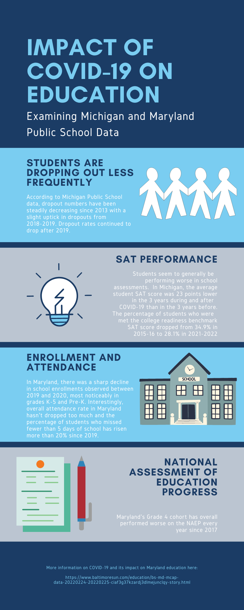

The purpose of this dashboard is is to provide context to the impact COVID-19 has had on student enrollment and performance. With each graph, there will be a introductory explanation of what you are looking, explanation of how to read and interact with the graph, and our personal conclusions after viewing the data. Our visualizations are split between this webpage and Tableau. Please view our Tableau visualizations here as these will provide even more information and context surrounding COVID-19 and ist impact on education.
Michigan School Data
This chart shows the amount of dropouts for each graduation cohort.
Example from mischooldata.org: Students in the 2018 cohort were ninth graders in the 2014-15 school year.
Their on-time expected graduation was four years later (2018).
Students in this cohort who graduated in 2018 were counted in the four-year graduation rate; those who did not graduate in 2018 could be counted as dropouts or off-track continuing.
Five- and six-year rates are calculated the same way, counting those who graduated with a regular high school diploma within five and six years, respectively.
Hovering over a line will highlight the cohort
Maryland School Data
This chart shows the amount of enrollments yearly for each grade cohort.
The following chart breaks down enrollment by county.
Hovering over a line will highlight the cohort
Maryland School Data
Attendance Rate: The average percentage of days a student attended school that year.
AbsenteeRate5: Percentage of students who were absent between zero and four days and who were registered to attend a single school, one or more schools in a county, or one or more schools in Maryland for at least 90 days.
AbsenteeRate20: Percentage of students who were absent 21 days or more and who were registered to attend a single school, one or more schools in a county, or one or more schools in Maryland for at least 90 days.
Chronic Absenteeism: The chronic absenteeism measure identifies the number of students who are expected to attend school for at least 10 days and who were absent 10% or more of the school days while enrolled at that school. For example, a student who is registered to attend a school for 30 days and who is absent 3 of those 30 days is considered chronically absent.
Hovering over a line will highlight the cohort
Michigan School Data
This chart shows the average SAT score for each year in 3 different categories(Math, Reading and Writing, Total Score).
Hover over each bar to see the average score for that year's assesment.
The national benchmark to be considered "college ready" is a score of 480 for Reading and Writing, and 530 for Math.
The chart below shows the amount of students that have met the respective benchmarks.
Hovering over a bar will show a tooltip
Total Amount of Students Assesed
2015-16: 104,267
2016-17: 105,905
2017-18: 105,133
2018-19: 102,656
2020-21: 80,752
2021-22: 95,521
Maryland School Data
This chart shows Maryland performance in 2013, 2015, 2017, 2019, and 2022 for the National Assesment of Education Progress.
This assesment is a holistic evaluation of the educational performance of a demographic.
The following percentages correspond to the total amount of students at each achievement level.
Hovering over a line will highlight the cohort
Reflection.
References and Resources